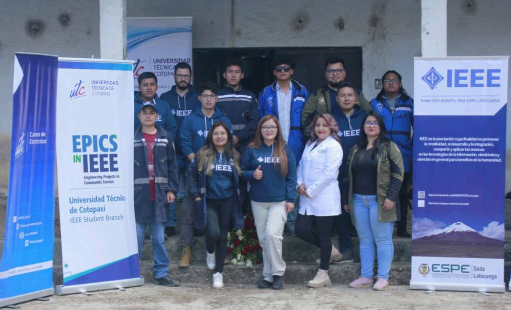
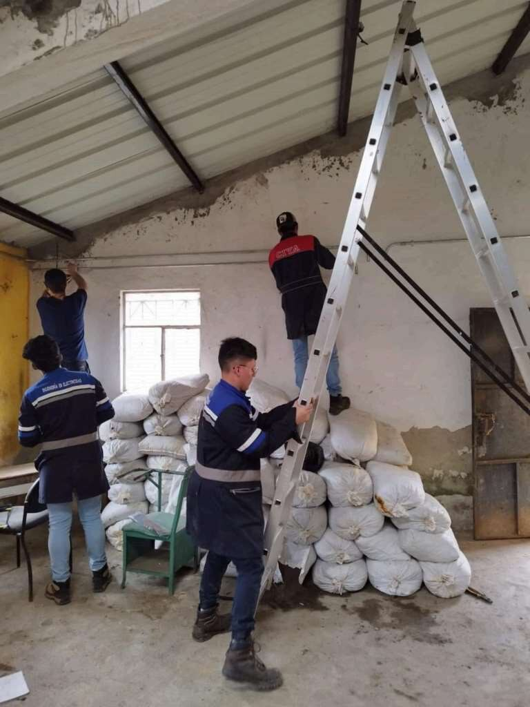

Engineering projects with students and communities
Community work has given me a way to connect engineering education with real technical needs, particularly through IEEE humanitarian-technology projects and ESPOCH outreach.

Angamarca: technology, production and STEM education
I served as professional coordinator of the IEEE SIGHT component of “Transforming vulnerable communities in the Ecuadorian Andes”. The work in Angamarca combined a community grain mill, an automated grain-drying initiative and STEM activities for children and adolescents.
The project brought together university students, IEEE volunteers, local organizations and the community around practical engineering solutions for agricultural production.

ESPOCH-ONE
ESPOCH-ONE implemented an automatic chlorination system for the rural drinking-water supply in Licto, Chimborazo. The work included electrical infrastructure, grounding, dosing-system integration, commissioning, operator training and handover to the local water board.